Instruction manual
Setting it up, using it every day, and reading what it tells you.
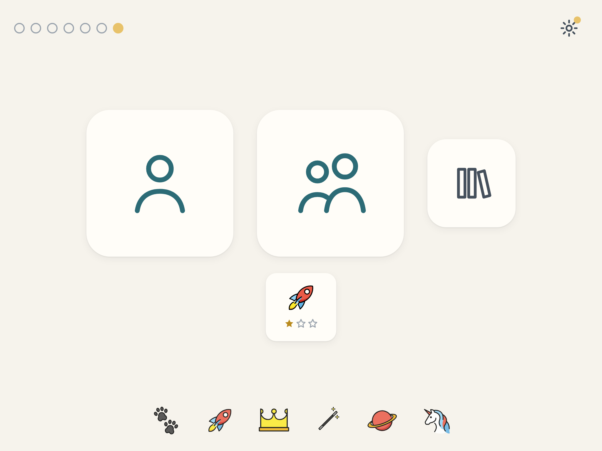
Allow about 45 minutes the first time. After that the app needs nothing from you except the occasional level unlock and a backup.
The app is a folder of files. It needs to be served from an https:// address once, so the iPad can download it. After that it runs with no connection. Pick one option.
https://sammahle.github.io/reading_app/A Pages site is always public, and on a free plan the repository must be public too. The site contains no data about her.
netlify.toml automatically.https://<name>.netlify.appNetlify can password-protect a site on paid plans if you want the app itself private.
Updating later: deploy again. The iPad downloads the new version in the background the next time it is online. It is never applied in the middle of a session. You will see a small dot on the gear; apply it from Parent area → About → Update now.
All audio is your voice, recorded on the iPad. Open Parent area → Sound Studio. The first time, iPadOS asks for microphone permission.
For each clip: tap the microphone, say the sound, tap stop. The app trims the silence, evens out the volume and saves it. Tap play to check, and record again if you are not happy.
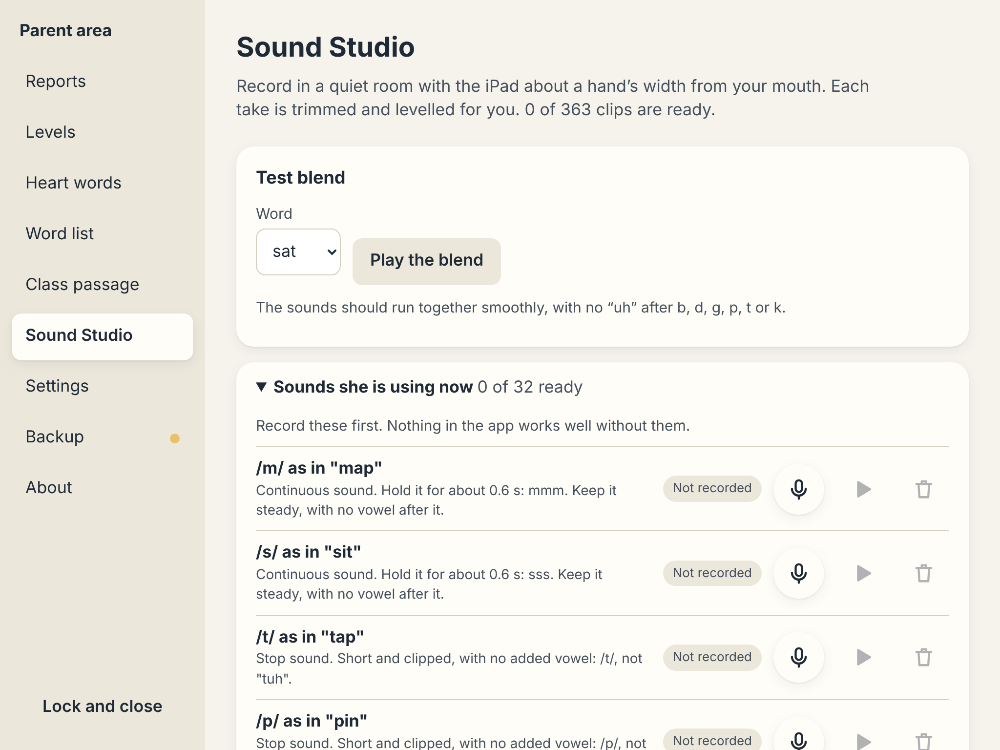
| Kind of sound | Examples | How to say it |
|---|---|---|
| Sounds you can hold | m, s, f, n, l, r, z, sh, th, all vowels | Hold it steady for about half a second: "mmmm", not "muh". |
| Stop sounds | b, d, g, p, t, c/k, ch | Short and clipped, with no vowel after it: a quick /b/, not "buh". This matters most. An added "uh" makes "b-a-t" blend to "buh-a-tuh". |
| Whole words | cat, the, friend | Naturally, as you would say it to her. |
Then use Test blend at the top of Sound Studio: pick a word and listen. The sounds should run together smoothly into the word.
| On screen | What it is |
|---|---|
| One person | Solo mode. She works on her own. |
| Two people | Coach mode. She reads aloud to you. |
| Books | Her bookshelf: everything she has finished, to reread. |
| Card with stars | A story that is due for its next read. |
| Row of dots | One dot for each of the last seven days. A day she practised is filled in. Nothing is ever shown as lost. |
| Gear | The parent area. Hold for 3 seconds. A dot on it means something needs you: sounds to record, or an update. |
Every launch starts with one large Start button. iPadOS only allows sound after a tap, and this is that tap.
This is the heart of the app and the only help it ever gives. It opens when she taps a word, and automatically after a miss. It is the same as the sound dots her teacher draws under words.
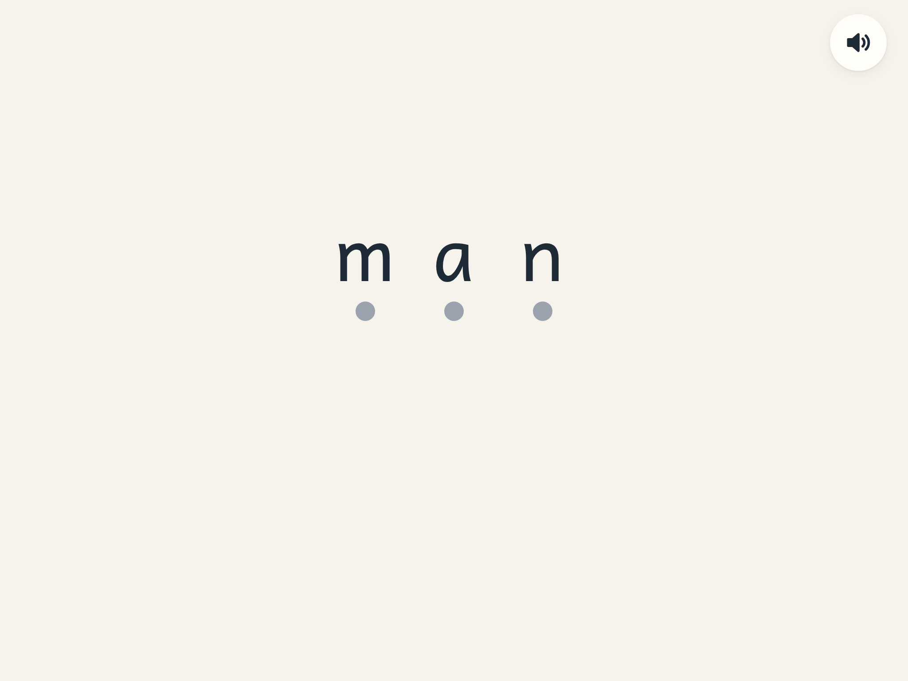
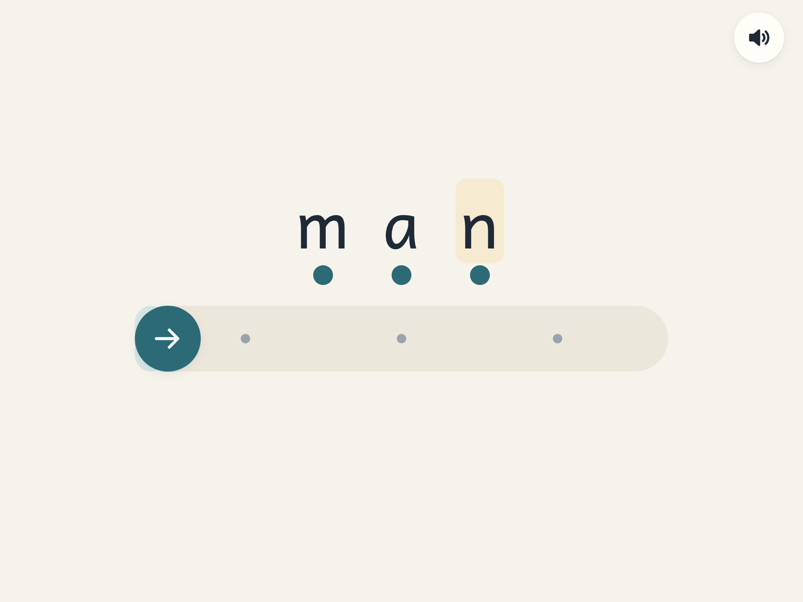
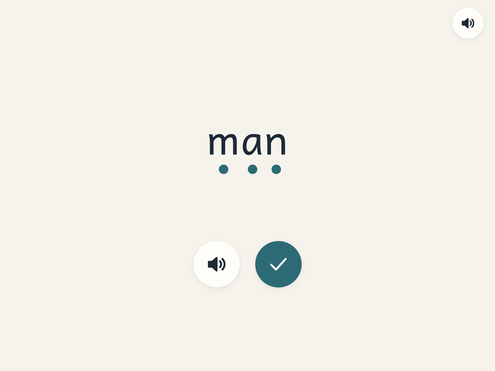
A session is 4, 6 or 8 minutes (you choose; 6 to start). The dots along the top show how far through she is. There is no clock on screen.
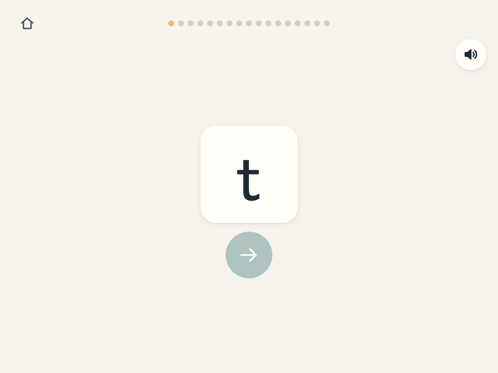
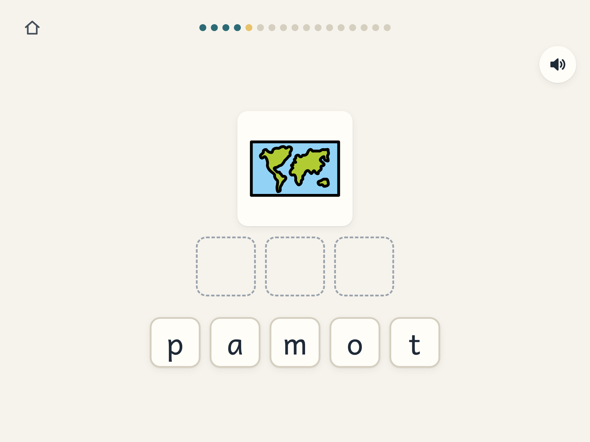
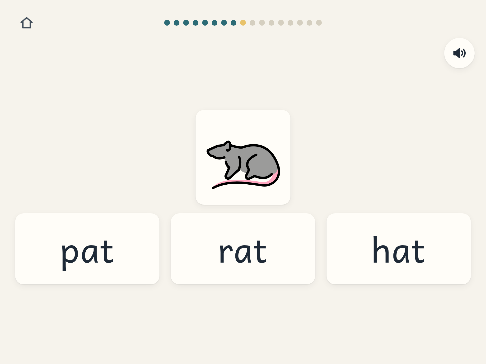
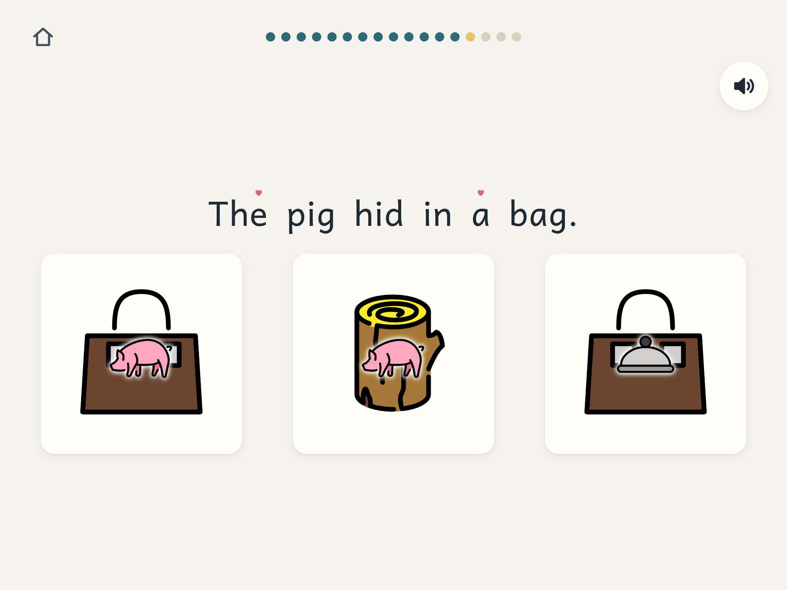
| Moment | What the app does |
|---|---|
| First miss | No buzzer, no red X. The sound-it-out routine opens on the word. Then she tries again. |
| Second miss | The app models it: each sound, the blend, the word. The right answer is highlighted and she taps it herself. |
| Afterwards | That item comes back a few items later, and the word returns to daily review. |
When time is up she finishes the item she is on, then does one she knows well, so she always ends on a success. The sentences she read go on her bookshelf. After the daily limit (two sessions unless you change it) she sees a quiet "see you tomorrow" screen; the bookshelf stays open.
To stop a session early: hold the home icon for 2 seconds.
She reads aloud and you score. This builds fluency and her tolerance for more text. Sit so the scoring strip is on your side (Settings → Scoring strip side).
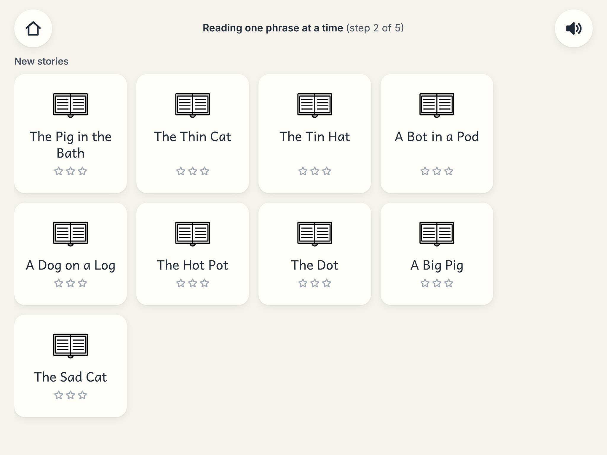
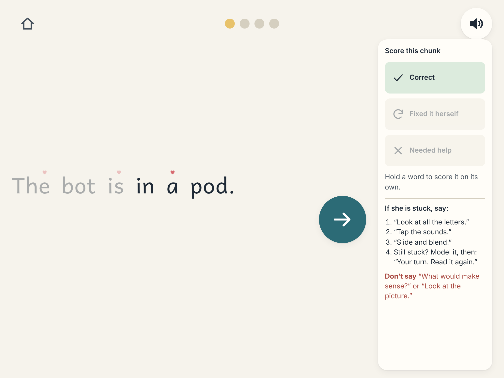
| She… | You… |
|---|---|
| reads the chunk correctly | tap ✓ Correct. The next chunk appears. (She can also tap the arrow herself.) |
| misreads a word, then fixes it herself | hold a finger on that word until it highlights, then tap ↻ Fixed it herself. Then ✓ for the rest. |
| gets stuck on a word | use the correction script below. Then hold the word and tap ✕ Needed help. Then ✓ for the rest. |
| wants to sound a word out | let her tap it. The routine opens. That is the app working as intended. |
Never say "What would make sense?" or "Look at the picture." Those teach guessing, which is the habit this app exists to replace. The script stays on the strip so every adult uses the same words.
| Step | She sees at once | Moves when |
|---|---|---|
| 1 | One word | Up after two Coach sessions in a row at 90% or better. Down after one session below 80%. She starts at step 2. You can set the step by hand in Settings; the change is logged. |
| 2 | One phrase (2 to 4 words) | |
| 3 | One sentence | |
| 4 | Two sentences | |
| 5 | The full page |
Accuracy counts a word as right if she read it correctly or fixed it herself. Words that needed help count against it, and they join her Solo practice the next day.
Each story earns a star per completed read: the first read, a second the same or next day, and a third later in the week. Stars are for finishing, never for speed. A story due for its next read appears on the home screen.
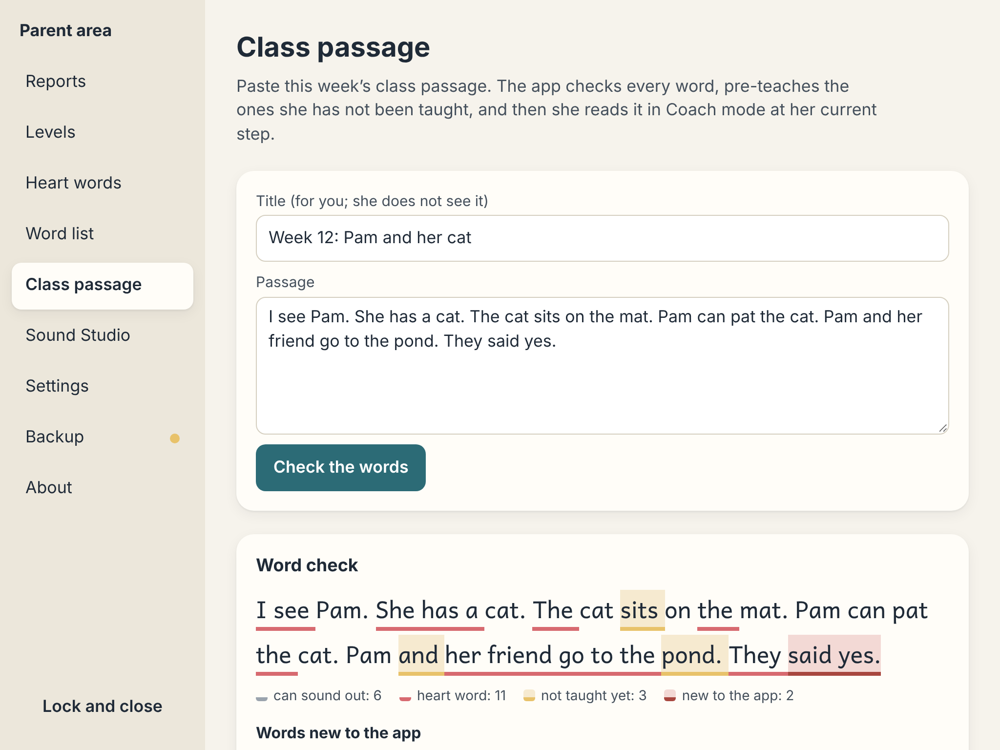
This is the only place she is ever shown a word that has not been taught, and only after practising it in the same sitting.
Hold the gear for 3 seconds and enter your PIN. It locks itself after 5 minutes without a touch, or as soon as you leave the app.
Unlock a level when her class has taught it. Before anything changes you see exactly how many words, sentences and stories it adds or removes.
Tap a single pattern to switch just that one. Letters outside the eight levels (k, w, j, v, x, y, qu) are under "Not in a level yet".
A level cannot be unlocked until its sounds are recorded. The app tells you which are missing.
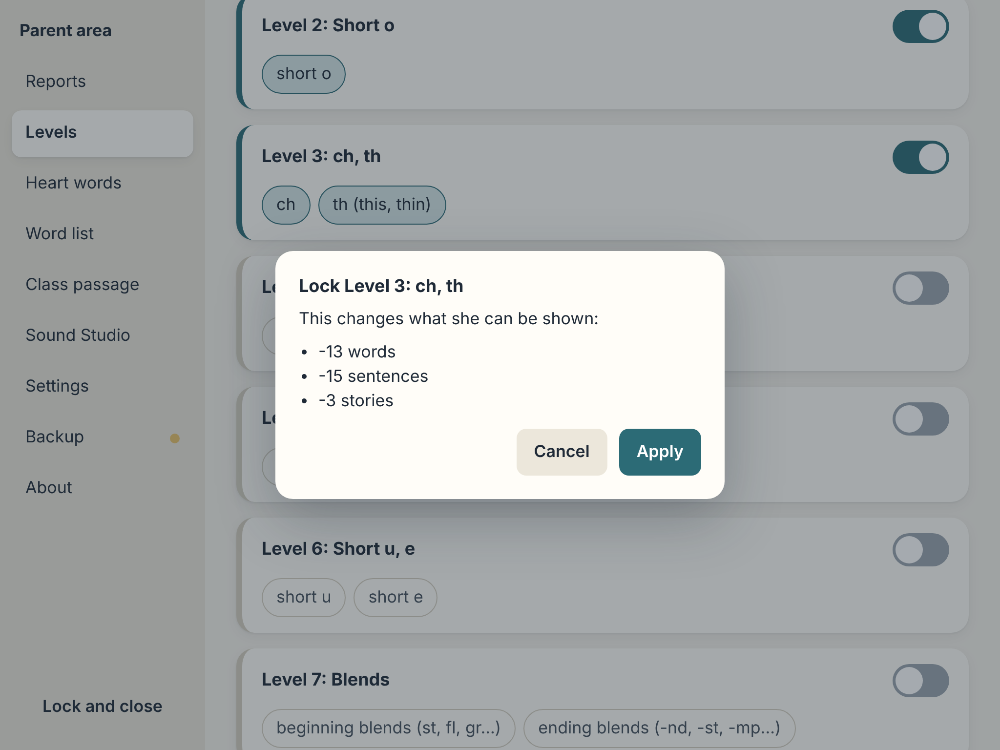
| Level | Teaches | Examples | At install |
|---|---|---|---|
| 1 | Short a, i; m s t p n c f d g h b r l z | cap, map, sit, pin | Unlocked |
| 2 | Short o | hop, dog, top, pot | Unlocked |
| 3 | ch, th | chip, chat, this, math | Unlocked |
| 4 | Ending -s | hops, dogs, sits | Locked. Unlock when ready; it already appears in class passages. |
| 5 | sh | ship, shop, fish | Locked. The next new skill. |
| 6 | Short u, e | sun, bed, run | Locked |
| 7 | Blends | stop, pond, hand | Locked |
| 8 | ck, wh, silent e | duck, when, home | Locked |
The list shows each heart word with its dots and hearts as she will see them. Hearts fall away by themselves as patterns unlock: is and has lose theirs at Level 4, and she keeps only the one over e after Level 5.
To add one: type the word → Split into sounds → check each sound → tap "♥ irregular" on any part that breaks the rules → Save. Then record it in Sound Studio.
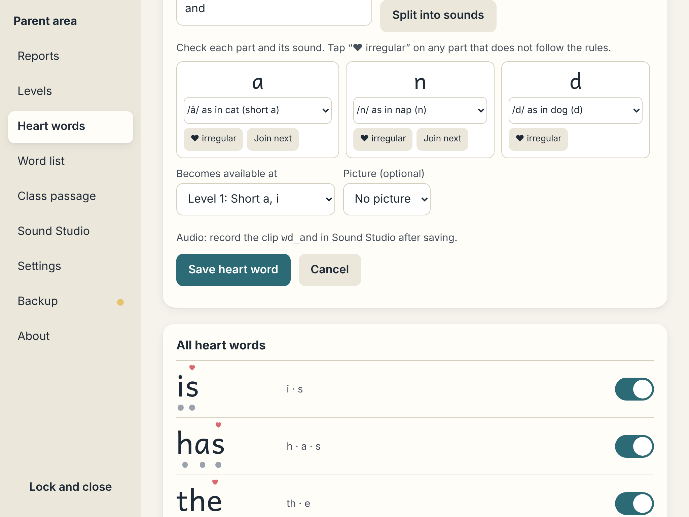
Interest words. Four heart words ship switched off: star, moon, fairy, princess. Turn any of them on in the list (look for "interest word") and five extra stories become available, including To the Moon and The Princess on the Moon. Star and moon are the easiest two to start with. Record each word, and for fairy the extra sound /air/, first.
Every regular word, with its sounds and the level it becomes readable at. Add a word the same way as a heart word. The app proposes the split; you confirm it, because some choices need a person (the s in gas against the s in dogs, th in this against thin). It also suggests look-alike words for "Pick the word".
| Setting | What it does |
|---|---|
| Session length | 4, 6 or 8 minutes of Solo. Start with 6. |
| Solo sessions per day | 1 to 4. Default 2. |
| Scoring strip side | Left or right, to suit where you sit. |
| Text-load step | Set the Coach step by hand. Normally leave it to the app. |
| Use the iPad's voice until you have recorded | Speaks unrecorded whole words and directions. Never single sounds. |
| Quiet mode | No sound. Listening activities are skipped and the session log notes it. For waiting rooms. |
| Change PIN | Needs the current PIN. |
Export backup saves one file, readingapp-backup-YYYYMMDD.json, through the share sheet: progress, settings, words you added, and your recordings. Save it to Files or iCloud Drive. Import replaces everything on the iPad with a backup's contents after asking you to confirm. Nothing is merged. The app reminds you after 30 days.
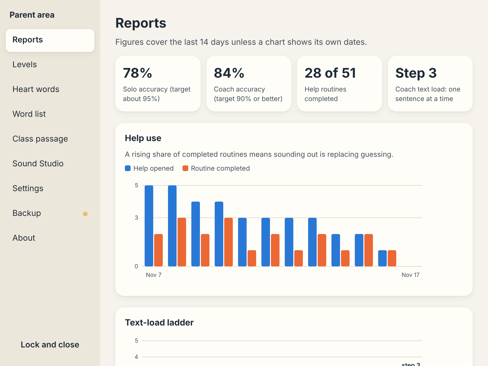
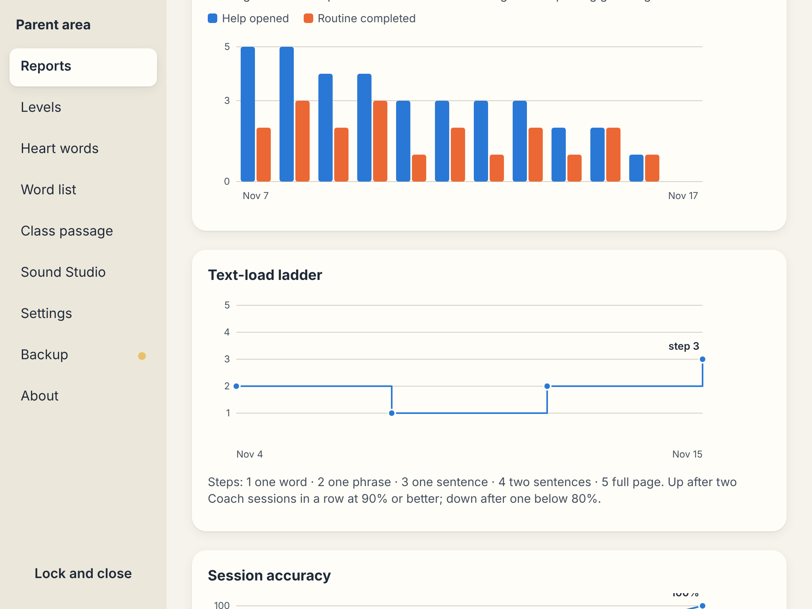
| Report | What it shows | What to look for |
|---|---|---|
| Solo accuracy | Share of Solo items right first time, with no help, over 14 days. | About 95%. Much lower: the content is too hard, so hold off unlocking. 100% for a week: she is ready for more. |
| Coach accuracy | Share of words read correctly or self-corrected. | 90% or better. |
| Help use | Per session: how often help opened, and how often she finished the routine. | The key chart. The orange bars catching up with the blue ones means sounding out is replacing guessing. |
| Text-load ladder | Her step over time. | A slow climb. A step down is the app protecting her confidence, not a failure. |
| Stall words | Words ranked by misses plus help uses. | A pattern across words (all short o, say) is worth mentioning to her teacher. |
| Pattern accuracy | Accuracy for each taught pattern. | Rows marked "Needs practice". Do not unlock the next level while one is weak. |
| Session log | Date, mode, length, items, accuracy, notes. | Notes such as skipped listening items. |
| When | What |
|---|---|
| Most days | One Solo session (6 minutes). Her choice of when. |
| Three or four times a week | One Coach story together (5 to 10 minutes). Follow the "Read again" cards so each story gets its three reads. |
| When the class passage comes home | Enter it under Class passage. Read it in Coach mode once or twice that week. |
| Weekly, for you | Two minutes in Reports. Check help use and stall words. |
| When school teaches something new | Record its sounds, then unlock the level. |
| Monthly | Export a backup. |
Keep it short and stop while it is going well. The app is built so that she succeeds about nineteen times in twenty; that feeling is the point.
| Problem | What to do |
|---|---|
| No sound at all | Check the iPad's volume and that Quiet mode is off. Sound starts with the Start button; if the app was left open for a long time, close and reopen it. |
| Dots are silent but other sounds work | Those sounds are not recorded. Sound Studio → "Sounds she is using now". |
| Words are silent after the routine | Record the word, or turn on "Use the iPad's voice until you have recorded". |
| Sound matching or word building never appears | They need audio. They are skipped when sounds or words are missing, or in Quiet mode. The session log says so. |
| The microphone will not record | iPad Settings → find the Reading app or Safari → allow Microphone. Recording works from the home-screen app. |
| It will not open without Wi-Fi | Open it from the home screen once while online and wait for About to say "Ready to work offline". |
| A level will not unlock | The message lists the sounds to record first. |
| A story has disappeared from Coach | It needs a pattern or heart word that is now locked. Unlock it again and the story returns. |
| The slider snaps back | It must be dragged in one movement from the left end to the right end. Letting go early starts it again. This is deliberate. |
| She taps and nothing happens | Taps in the first second, or straight after another tap, are ignored on purpose. Encourage her to look, then tap once. |
| A "start again" arrow appeared | Something went wrong and the app recovered. Tap the arrow. The details are in About → Error log. |
| Forgotten PIN | There is no reset. iPad Settings → Safari → Advanced → Website Data → remove the app's site, then reinstall and import your last backup. Without a backup, progress and recordings are lost. |
| Storage protection says "not granted" | iPadOS may clear data from sites that are not used for weeks. Keep the app on the home screen, use it regularly, and back up. |
I · a · the · they · she · he · we · go · see · like · was · is · has · her · friend · down · eat · to · are
can is on her school list but is fully decodable, so it is an ordinary word here.
A word answered right with no help moves up a box: reviewed the same day, then after 1, 2, 4 and 8 days. A modelled word goes back to the start. A word is mastered after three different days of unaided correct answers.
All data stays on the iPad. The app has no accounts, analytics or third-party code and makes no network requests while running. The Andika typeface is © SIL International, licensed under the SIL Open Font License 1.1. Pictures are from OpenMoji (openmoji.org), licensed CC BY-SA 4.0, except mat, pod, dot, lid and mop, which were drawn for this app.
For developers: README.md covers building, testing, and adding bundled content. docs/BUILD_REPORT.md lists test results, deviations from the spec and open questions.